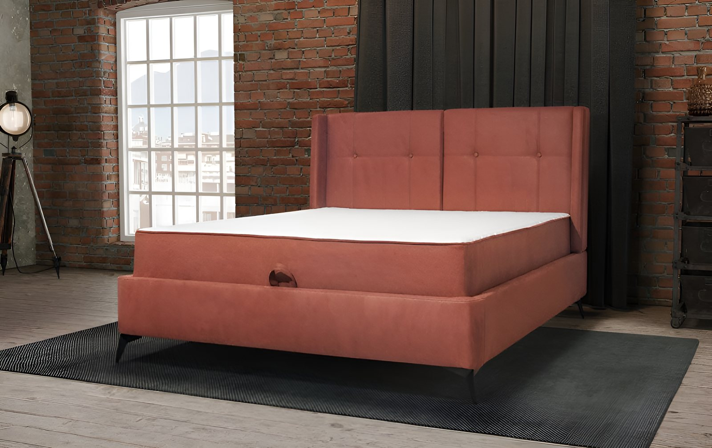
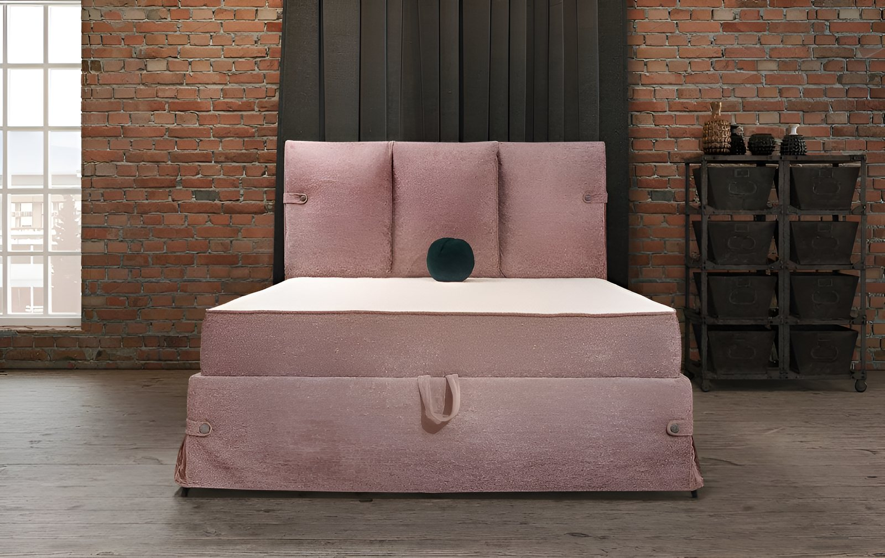
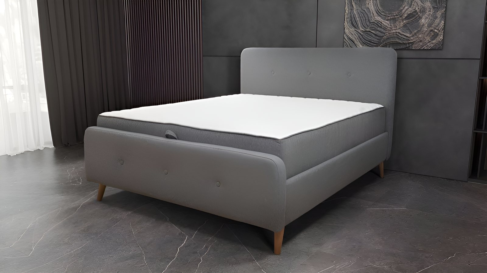
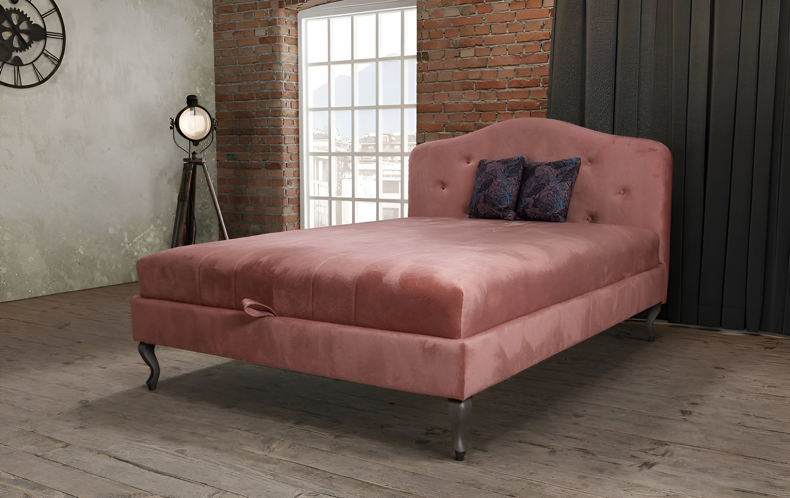

Salon nameštaja · Aranđelovac
Birate model, meru i štof.
Ostalo je naš posao.
Preko 1200 modela iz programa naših proizvođača, a kreveti i dušeci rade se i u dimenziji koju vi tražite.
- 2013 salon u Aranđelovcu
- Porodično vlasnici u salonu
- Karte štofova uzorci u ruci
Kad kataloška dimenzija ne odgovara
Kreveti i dušeci po meri
Krevet i dušek se kupuju u dimenzijama koje neko drugi odredi — 160, 180, 200. A niša, mansarda ili stari krevet traže nešto između. Kod nas se naručuje u dimenziji koju vi tražite.
Ako niste sigurni u meru, izađemo i izmerimo. Štof i drvo birate u salonu, cena dolazi posle.




Salon
Kod nas u Aranđelovcu
Salon se nalazi u Kralja Petra I bb i u ovom obliku radi od 2013. godine. Nameštaj je izložen u tri lokala, dva u prizemlju i jedan na spratu.
Salon vodi naša porodica i u njemu ćete uvek zateći nekog od nas. Dođite, pogledajte nameštaj uživo i pitajte sve što vas zanima.


Iskustva kupaca
4,8 Google mape ↗-
Veoma dobar izbor komadnog nameštaja, kao i pločastog. Dobri rokovi isporuke, tako da je čekanje u okvirima koje daje proizvođač, a često i kraće od toga. Nude isporuku i ugradnju često uračunate u ceni, a moguće je dobiti i dobre uslove plaćanja. Kako je kupovina nameštaja više od izbora slike na internetu, svima kojima je ova radnja „na putu“, preporučujem da je posete i provere njihovu ponudu i ostale uslove prodaje. Nećete se pokajati.
Ljubiša L.pre 7 godina -
Širok izbor nameštaja odličnog kvaliteta! Veoma ljubazna usluga, toplo preporučujem!
Radovan B.pre 7 godina -
Širok izbor kvalitetnog i pristupačnog nameštaja, odlična usluga, ljubazno osoblje.
Marko S.pre 7 godina -
Sviđa mi se izbor nameštaja, od pomoći su sa svim preporukama!
D. E.pre 2 godine -
Odlična usluga, visokokvalitetan nameštaj.
Ranka D.pre 4 godine -
Nameštaj odličnog kvaliteta. Odlična usluga.
Jovana M.pre 4 godine -
Dobar izbor nameštaja i kvalitetna usluga!
Nikola N.pre 4 godine -
Odlična usluga, svaka preporuka!
Tadej G.pre 7 godina
Kontakt
Pozovite, pišite ili dođite u salon
Najbrže je telefonom. Na upit mailom odgovaramo istog ili sledećeg radnog dana.
- AdresaUl. Kralja Petra I bb
34300 Aranđelovac - Telefon034 723 007
064 1187 264 - E-poštaleskaplus@gmail.com
- Radno vreme Ponedeljak – petak08:00 – 19:00 Subota08:00 – 16:00 NedeljaZatvoreno